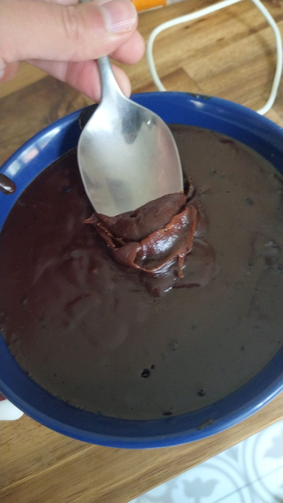

Brigadeiro vegano

Description
One of the desserts you must taste if you go to Brazil is brigadeiro, that is basic made by condensed milk, butter and chocolate(cacao). These small balls covered with chocolate sprinkles are very famous in birthday parties.
And, as anyone loves it, vegan people can not be left behind, that's why I created this alternative recipe of brigadeiro, 100% milk free
Let's go take a look at it?
Ingredients
- 200ml of soy cream fluid
- 700ml of soy milk (barista)
- 300ml of hazelnut milk (epeautre noisette)
- 200ml of cristal sugar
- 30ml of coconut sugar
- One tablespoon of vegan butter
- One tablespoon of cacao
- 100g of dark chocolate
Steps
- In a pan, put the milk, the soycream, and the sugar
- turn on the stove on medium/high heat, let it let it boil and stir it from time to time (almost 1h40 total)
- When it's already reduced by the half, add the chocolate, the cacao and the butter
- Lower the heat, and mix until it has a good consistency.
- Put it in a bowl and put it in the fridge
- After some hours it will be ready and you can eat it whit a spoon or do little balls and cover it with chocolate sprinkles